യോസഫ് മിസ്രയിമില് സര്വ്വാധിപതി
വൃത്തം -- ദൃതകാകളി (പാന)
രണ്ടുകൊല്ലം കഴിഞ്ഞോരനന്തരം
കണ്ടൊരു കിനാവീജിപ*തു ഭൂപതി
ഉണ്ടു നില്ക്കുന്നവന് നദീതീരത്തു
കണ്ടകതര്രാസ ഹീന സയരോജ്യവാന്.
അപ്പൊഴേററം തടിച്ചുകൊഴുത്തതി
ശിലമായ* വിലസുന്നോരുടലൊടും
സപ്യഗോക്കടം നദിയില് നിന്നേറിനാര്
സപ്ടവസ്തുക്കഠം ന്യായത്തിലെന്നപോല് 8
ഞാങ്ങണകടംംക്കിടയില് യഥാസുഖം
മേഞ്ഞുകൊണ്ടങ്ങിരുന്നിതവയേഴും
മംഗളശ്രുതി ഭ്രവില് ചരിച്ചിടും
തുംഗനിഷ്കരാം പ്രാജ്ഞര് കണക്കിനേ.
വന്നിതിന് പിറകേഴ ഗോക്കടംബഹു
ഖിന്നതയാ മെലിഞ്ഞു വിരൂപമായ
ആയവ വിഴുങ്ങിക്കളഞ്ഞാദിമ
ഗോചയത്തേ ദയാഹീനമാകവേ. 16
ഇക്കിനാവേവം കണ്ടുണര്ന്നീടിനാന്
ചിക്കനേയുറങ്ങീടിനാന് പിന്നെയും
അപ്പൊഴുതും വിലോകിച്ചൊരു സ്വപ്-
മപ്പുമാന് വയല്തന്നില് നിന്നീടവേ
ഉണ്ടു ഭംഗിയില് കാണുന്നു ഗോധ്യമ-
ആങണ്ടൊന്നായതില് നിന്നെഴു മഞ്ജരി
പുഷ്ടമായി ത്തിളങ്ങുന്നതിന് പിന്പേ
നഷ്ടദാര്ഡ്യമായ? ശൂഷ്കമായുള്ളൊരു 24
കര്ശിത കണിശങ്ങടം കാണായിതു
ഭര്ശനാവസര മിതിലേഴെണ്ണം
അന്തി മമായൊരിക്കതി രേഴുമ-
ചന്തമേറിടും സമന്മഞ്ജരികളേ
മുററുമമ്പോ! വിഴുങ്ങുക മൂലമാ--
യററു പോയിതു കാഴ്ചക്കയുവയേഴം
പ്രത്ൃഷസ്സില് ക്ഷിതീന്ദ്രനെഴുന്നേററ
ചിത്രമായ് തന് സ്വപ്പദ്വയം നിജ 82
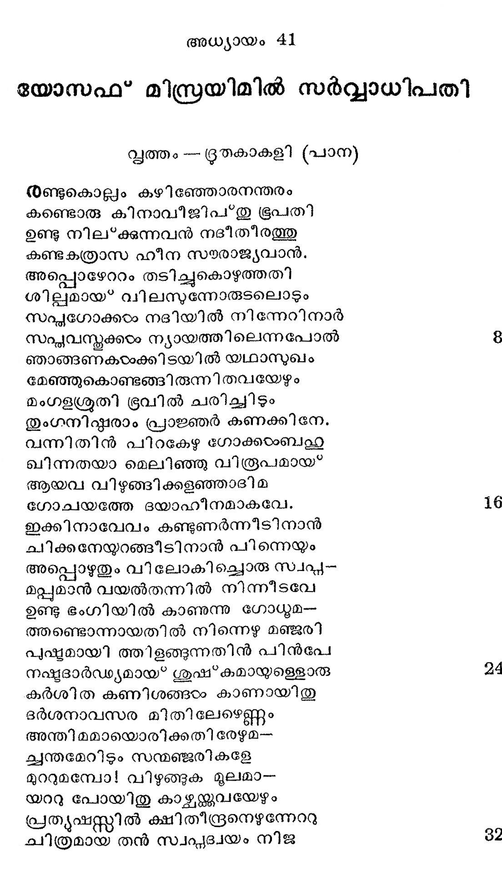
മന്രവാദികടം ജ്ഞാനി കളാദിയാ-
മന്തിക സ്ഥിതന്മാരേ യറിയിച്ചു.
തഥ്യമാകും തദത്ഥ മുരജകൂുവാന്
മിഥ്ൃയയാകാത്ത വാക്കിനാല് ശാസിച്ചു.
എത്രതന്നേ ശഠിച്ചു കല്ിക്കിലും
അത്ഥമോതാന് കഴിവു ലഭിക്കാതെ
ജ്ഞാനികടം വിഷമിച്ചു പിന്മാറിനാര്
കൂനന് കോപിയ്ക്കില് ഗോപുരം കുത്തുമോ ?
അത്ഥലബ്ബിയുണ്ടാകാഞ്ഞു ഭൂപതി
ചിത്തരംഗത്തി നാശ്വാസമില്ലാതെ
ഖിന്നനായ* മരുവുന്നതു കണ്ടപ്പോഴം
ധന്യനാം മദിരേശനുര ചെയ്ത:
ഭോ! മഹാ മഹിമശ്രീയെഴുന്നൊരു
ഭീമസാഹസശീല ഭൂപാലക
സ്വപ്പഭര്ശന കാരണമൊട്ു മു-
ദ്വിഗ്ധനാവുക വേണ്ടകതാരിൽ ന്.
ഭാവിസംഭവ മോതുവാനുണ്ടൊരു
കോവിദന് സ്വപ്പവ്യാഖ്യാവിചക്ഷണന്
ഞാനും പുപാധികാരിയും കൂടവേ
ഭീനരായിത്തടവില് ക്കിടക്കമ്പോടം
കണ്ടതാം രണ്ടു സ്വപ്പത്തിനായവ-൦
നിണ്ടല് കൂടാതെ യത്ഥം വദിച്ചിതു.
വള്ളിപുളളിക്കുപോലം ഭിദയെന്റേ._
യുള്ള മട്ടില് ഫലിച്ചവ ചിത്രമായ്.
ആകയാലബ്ബ ധനേ യറിയിച്ചാ-
ലാകലത്വമകററും ഭവാന്നുടന്.
ജാലമുണ്ടായിരിക്കവേ കയ്യിനാല്
വേല ചെയ?വതെന്തിന്നു മത്സ്യഗ്രഹേ ?
ചോദ്യമായ ഫറോവാരിവന് സ്വപ്യിക-൦-
വിദ്യ ഭംഗ്യാ ഗ്രഹിച്ചുള്ള പുരുഷന്.
ചൊല്ലിനാൻ മദി രേശന് പിതുഭ്രക-
ന്നുള്ളൊരു ഭാസനെബ്രായവംശജന്.
ആയവന് തടവില് ക്കിടക്കുന്നിതു
സ്വീയനേതാവിന് കോപഹഫലത്തിനാല്
എന്നുടെ പുനഷ്ഠാപനത്തിന് കഥ
മാന്യനാമവന് ചൊന്നോരു നേരത്തു
പൊന്നുതമ്പുരാന് തന്നുടെ മുന്പിലെന്
ഖിന്നഭാവമറിയിച്ചിവിടെ നി-൦
ന്നുന്നയിക്കണമെന്നെയ മെന്നവന്
സന്നതയോടുരച്ചതശേഷവും
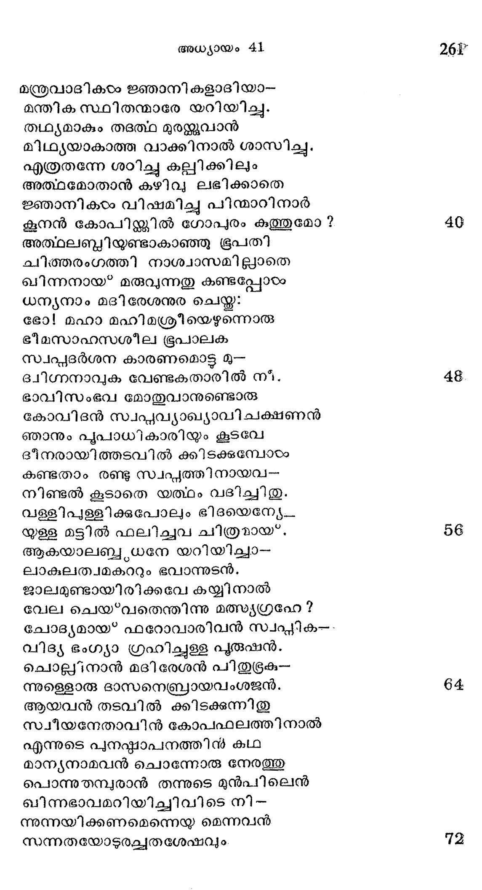
നന്ദിയെന്നേ്യ മറന്നേനിതുവരെ
ഇന്നതിന്നായനുതപിച്ചിടുന്നെന്-
വാചമീവണ്ണ മാകര്ണ്യഭൂപനും
വീചി മാലയടങ്ങും കടൽപ്ോലെ.
മാനസം സമാശ്വസ്തമാക്കിബ്ൃദ്ധ
മാനവന് തനിക്കാളയച്ചീടിനാന്.
രാജഭൂത്യര് ജയിലിലെത്തും വിധായ
നീചബന്ദികടം മദ്ധ്യത്തിലെത്രയും
തുംഗസങ്കട മാവഹാിച്ചാനന്ദ--
ഭംഗി മങ്ങിയ യൂഷഭാഭിഖ്യനേ
മഞ്ഞില് മാഞ്ഞു തെളിയാതെ നിന്നിടും
മഞ്ജുവാമിന്ദുവെന്ന പോലന്നഹോ
കണ്ടു വേദന പൂണ്ടാര കഠിനരു--
മണ്ടലാളം മഹാത്മനാം പീഡയില്.
കേശമീശകളക്രമമായ*വള--
നനാശരച്ചന്ദ്ര ശുഭ്രവദനത്തെ
മൂടി സ്റ്റാടിക ക്ഷീര സരസ്റ്റി നേ-
ചൂടി നില്ലന്നു പായല്ഗണം പോലെ;
കണ്ണുകഠം ഭയനീയതമാത്രമേ
തിണ്ണമുദവഹിക്കുന്നുള്ള, ചൈതന്യം
എവ്വിടത്തോ കടന്നു മറഞ്ഞു പോ--
യിവുുക ജയില് വാസം സഹിക്കില്ല.
ദീര്ഘനിശ്വാസ ഹേതുവാല് ചുണ്ടുകരം
പാക്കണക്കി നുറുക്കിയ മട്ടിലായ*.
നെഞ്ചു കഷ്ടമേ കൂടു കുത്തീട്ടതി--
ലഞ്ചിടങ്ങഴി വെളളം പകര്ന്നിടാം
കുക്ഷിയാകവെ യൊട്ടിക്ഷയധാഖ്യയാം
ഭിക്ഷുക തന്െറ ഭിക്ഷാവപനംപോല്
ഏററവും കഴിഞ്ഞല്ലോ വിളങ്ങുന്നു
പാററി ടുന്നുണ്ടതു മുപവാസത്താല്.
വ്രസ്മമാകെപ്പൊടിഞ്ഞു കിഴിഞ്ഞതാ-
ലര്ദ്ധനഗ്നനായ*ത്തീരുന്നു യൂഷഭന്
അത്രയ്യമല്ല കാരാഗ്ൃഹത്തിലേ
മേത്തരമാം ചളിയുടെ മച്ചമായ*
വ്യക്തമാകുന്നു വന്റ്രമതില് കുടി -
പാര്പ്പുകാരുണ്ടു കൂറകളൊട്ടുപേര്.
പാണി പാട നഖങ്ങടംം നിരങ്ഭശം
താണി ടാതെ തടവു കാലാവധി
വേണമെങ്കില് മുറിപ്പതിന്നെന്നപോല്
ചേണകന്നു വളര്ന്നു നെടുതായി.
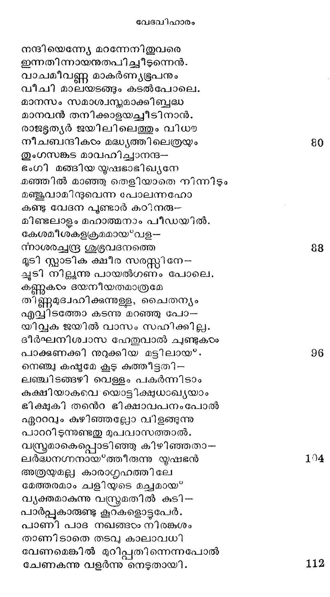
ഈദ്ദശം കിടക്കുന്ന യോസേഫിനന്െറ
ക്ഷീണമാം ശ്രവണങ്ങളില് പ്രേഷിതർ
മോചന രവഗാനം മുഴുക്കവേ
വാചമായതു കേട്ടണര്ന്നീടിനാന്.
രാജഭുത്യരവനേ യഥാവിധി
നീചകാരയില് നിന്നിറക്കിക്ഷണം
ക്ഷനരകര്മ്മാദി ശുദ്ധിനടത്തിച്ചു
നിരിലാറാടുമാറാക്കി ശുഭ്രമാം
ചേലമാദര പുയവ്വയമരുളി ഭ--
പാലസന്നിധയ കൊണ്ടുനിര്ത്തീടിനാര്.
രാജധാനിക്കു പോംവഴി യൂഷഭന്
ഭ്രാജത്താം പല കാഴ്ച കണ്ടീടിനാന്.
മേട വീടുകടം മാളിക ഗോപുരം
തോടുകരം പല മേടുകടം കാടുകടം
ഈടെഴും സുമവാടി കളാടുക--
ളാടലെന്യേ കിടന്നിടും കോടുകയം
പീടികയോടു നാട്കശാലകരം
ഘോടകാലയം വാരണ പങ്ക്തികരം
ചിത്രരൂപമാം ഗുപ്യലിപിയെഴും
ഭിീത്തികളള്ള വിദ്യാനി കേതനം
*ഏപ്പി ?സ്റ്റെന്ന വൃഷഭ സ്വരൂപത്തെ
സപ്രതിഷ്ട ചെയ്തുള്ള വന്ക്ഷേത്രങ്ങഠം
മര്തൃരൂപത്തിൽ കൽകളാൽ തീര്ത്തുള്ള
ചിത്രിതങ്ങളാം “സ്പ്റിംക്ല?ന്ന രൂപങ്ങടം
ഭൂചരിന് ശവാഗാരമായ'* മിന്നിടും
ഭീമമാം പിരമില്ലൊന്ന ശില്ങ്ങംം
മാനുഷ മനസ്സാകര്ഷണം ചെയ്*_വാ-.
നേനല്റ്റിന് നിധിയാക മപ്പോലിയോന്
വിശ്വപീഠത്തില് ഭോഗവസ്തുക്കഠം വെ--
ചശ്രമമിരിക്കുന്ന പോലവേ
പണ്യവീഥിതന് രണ്ടുഭാഗത്തിലും
ഗണ്യമല്ലാത്ത ക്രയ്യപദാത്ഥാങ്ങഠം
ഭംഗിയില് നിരന്നുള്ള ഗൃഹങ്ങളും
തുംഗമോദേന കണ്ടുകൊണ്ടാടി നാന്.
ഈദൂശമവന് രാജവേഗ്ദം തന്നി --
ലാദരാല് പ്രവേശിച്ചു ഫറോവിന്െറ
സ്വാഗമം പാര്ത്തിരിക്കെ ഗൂൃതനായോ--
രാഗിരിസ്റനീ നാഥനുര ചെയ്ത.
കണ്ടു ഞാനൊരു സ്വപ്പയമതിന് പൊരു
കണ്ടവക്കാര്ക്കു മോതാന് കഴിവില്ല.
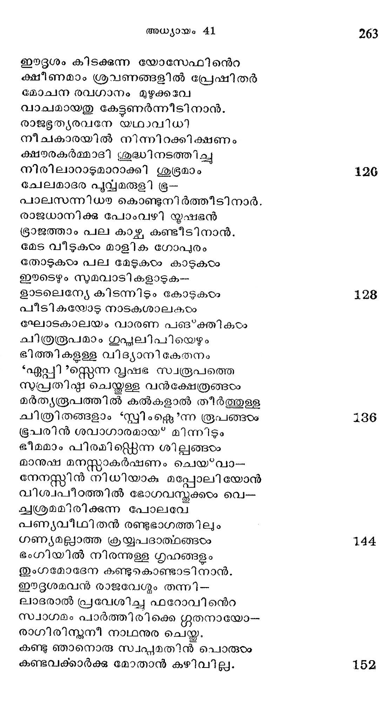
നീയതിന് വ്യാഖ്യ ചെയ്യുവാന് ശക്തനെ--
നനായതമതേ! കേട്ടിരിക്കുന്നു ഞാന്
ചൊല്ലിനാ നിസറേല് സുതന് ഭൂപനോ--
ടില്ലമേ നിപുണത മിതിനൊട്ടം.
വല്ലഭന് സകലേശനിവന് വഴി
നല്ലതാകും പൊരുടം ഭവാന്നേകിടും.
എന്നു കേട്ടടന് രാജാവുര ചെയ്ത
തന്നുടെ തലേരാവിലെ സ്വപ്യങ്ങഠം
യൂഷഭനത്ഥ മോതിനാന് നീ കണ്ടോ.
രേഴ ഗോക്കളമേഴ കണിശവും
ഏഴുവത്സരമാണതിലാദ് മ-
മുഴിയിലുണ്ടാമൈശ്വര്യകാലങ്ങരം.
പിന് വരുന്നതു ക്ഷാമവര്ഷങ്ങളാ
മന്നെഴും കൊടുപഞ്ഞം നിമിത്തമാ--
യാമിദവ്ൃദ്ധി മാഞ്ഞുപോം പിന്നത്തേ-
താദിമത്തെ വിഴുങ്ങിയ രീതിയില്
സുസ്ഥീരം, ക്ഷണഭാവിയെന്നുള്ളളെളൊരു
സത്യമത്രൈവ സുസ്പഷ്ടയമാക്കവാന്
രണ്ടുവട്ടമുണ്ടായിതു സ്വപ്നങ്ങയം
രണ്ടു രൂപത്തിലെന്നുറിഞ്ഞടടുക.
ആകയാലതി വൈദഗ്ധ്യമുള്ള വി-
വിവേകിയാമൊരു നേതാവിനെ ബ*ഭവാന്:
നാട്ടിനൊക്കെയധീശനായിട്ടുട--
നാക്കിവത്്ണംകാര്യം നടത്തുവാന്.
തല്ഭരണത്തിന് കീഴുകാര്യസ്ഥരായ*
നല്പെഴും പലരുണ്ടായിരിക്കണം.
ആയവര് മുലദൃദ്ധി കാലത്തില-
ളളായതമാം വിളവിലഞ്ചിന്നൊന്നു
വാങ്ങി ശേഖരിക്കേണം ഗവമ്മെന്റിന്
പാങ്ങിലായ* ക്ഷാമവാരണാത്ഥം പുരാ.
ഇവിധം ചെയ്കിലിക്ഷമ പഞ്ഞത്താല്
ഭവ്യമററു നശിക്കയില്ലൊട്ടമേ.
എന്നുതന്നെ കരുതിയാണി സ്വപ്നം
മന്നുവന്നീശനേകിയതിക്കാലം.
വാക്കിതു കേട്ട നേരത്തു മിസ്രപ--
നാക്കമോടുരച്ചെന്തതി വിസ:മയം.
ഇമ്മഹാ ഭയസംഭവം മുന്നറി--
ഞ്ഞിമ്മഹീവാസികരംക്കുര ചെയ്യുവാന്
ഇമ്മനുജനല്യാതൊരുവന് ദേവ--
നിമ്മലാത്മ ഭരിതനായ* കാണുമോ?
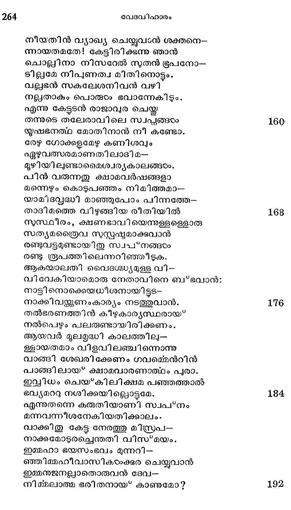
ആക്ടമേ യത്ഥ മോരുവാന് വയ്യാതൊ-
രിക്കിനാവിലിതേവിധം തുംഗമാ--
മത്ഥമുണ്ടായിരുന്നോ ? പരേശനന്െറ
വൃത്തികളാര്ക്കറിയാവ ദൈവമെ.
എത്ര ഭീമമാം ശൈലത്തിലും പര
മെത്ര തുച്ഛമാം രേണുവിന്നുള്ളിലും
നിദ്രകൊള്ളന്ന തത്വങ്ങളാല് സമൂ-
ന്നിദ്ര ചിത്തര് ബല്മതിക്കര്ഹരാം.
ചൊല്ലി യൂഷഭനോടവനീപത്ി
ഇല്ല നിന്നൊടു തുല്യന് വിവേകത്തില്
എന്ന ഹേതുവാല് മന്നിനെല്ലാററിനും
ഉന്നതാധിപസ്ഥാനത്തു നിന്നെ ഞാന്
ആക്കി വയ്ക്കുന്നു മന്മന്ദിരത്തിനും
ശ്ലാഘുൃനാം വിനേതാവു നീ മത്രമാം.
മല്പ്രജകളെല്ലാവരും നിന്നുടെ
സുപ്രഗല്ഭമാ മാജ്ഞകയാക്കൊക്കെയും
കീഴപടിഞ്ഞു നടക്കും പരേശനന്െറ
വാക്കുകടംക്കീമഹാ വിശ്വമെന്നപോല്.
രാജസിംഹാസനംകൊണ്ടു മാത്രം ഞാന്
ഭ്രാജിക്കും ഭവാനേക്കാളിതു മുതല്
മേലിലായുരാരോഗ്യ സമ്പൂര്ണ്ണനായ*
നീലനിമൃഗാ പാലിതമായൊര്ീ
ട്രവ്ൃയസമ്പന്നമാക മൃഷിപ്രസ്ഥം
ഭവ്യമായ*ഭരിച്ചീടു കയ്യേററു നീ.
എന്നുരച്ചുതന് മുദ്രാംഗുലീയകം
മന്നവനൂരി യൂഷഭന് തന്നുടെ
ധന്യമാം വിരലില് ധരിപ്പിച്ചതി
പാണ്ഡരമൂടുവ്്രമുടപ്പിച്ച
സ്വര്ണ്ണഹാരമൊന്നായവന് കണ്ണത്തില്
വര്ണ്ണഭംഗിയുളവാം വിധം ചേര്ത്തു
ശ്വേതവാജികടം നാലി നേപ്പട്ടിയ
സ്റ്റീതകാന്തി കലര്ന്ന രഥം തന്നില്
യൂഷഭന് തന്നെ യേററിഗ്ഗഭീരമാം
ഘോഷയാത്ര കഴിപ്പിച്ച മന്നവന്
സല്വയതോരമ്ൃയമായ്ള്ള മിസ്രരയിൻ
ഗുവിയാം വീഥിതന് നടുവൂടെ യാ_
ദുന്യഹപ്രഭാവാധികന് സല്ഗമം
നിവ്യഹിക്കവേ പയരരെലുാാവരും
സ്ഥ്റ്റുലോകമതില്നിന്നമര്തൃരിന്
വറ്ശറനായകനിന്ദ്രന് പ്രതാപവാൻ
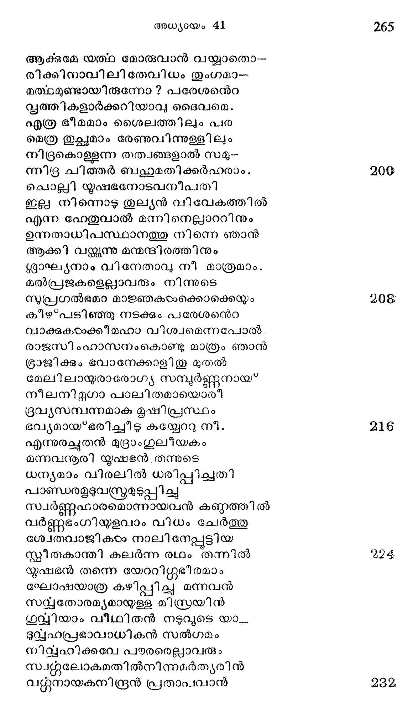
ക്ഷോണി തന്നിലെഴുന്നെള്ളിടുന്നതിന്
ചേണിതെന്നു പറഞ്ഞാരവിശങ്കം
പീലി ചുററിലും വച്ചു കെട്ടീട്ടള്ളോ--
രാലവട്ടങ്ങരം കാന്തിച്ചുടാ്ൃത
ചന്ദ്രമണ്ഡല പ്ൃന്ദസമാനമായ?
നിന്നു ശോഭിച്ചമന്ദം മഹമിതില്
ഒട്ടനേകം നിറം കലര്ന്നുള്ളവന്
ത്വിട്ടെഴുന്ന കൊടിക്കൂറ വായ്യവില്
കൂടുമായിച്ചലിച്ച യോസേഫി ന്െറ
ദ്വിട്ടകയാക്കുള്ള മാനസംപോലെവെ.
ക്ഷാമകാലവി ചാര വീവശയാം
ഭാമിനി യൃഷി പ്രസ്ഥലക്ക്യിക്കെഴും
സ്വേദമാററുന്നതിന്നെന്നു തോന്നുമാ--
റാദരാല് വീശിനിന്നിതു ചാമരം.
കൊമ്പുകടം കുഴല് കാഹളമെന്നിവ
വമ്പുകാട്ടി പ്രഘോഷിച്ചിതുത്സവം
ഡിണ്ഡിമം മഹാഭേരിയിവയറ-
ഞ്ഞണ്ഡവന് കടാഹം പൊടിയും വിധം
ശബൂമുല്ഗമിച്ചത്ൃക്ചരാവത്താ-
ലബ്ദിമേഖലയാകെ മുഴങ്ങിതുയ.
കബ്ബ,രതര വേഷ വിശേഷത്താല്
നിര്ഭരം ചിത്രമാം ശലഭത്തൊടു
തുല്യതപ്പെടത്താവുന്നൊരു കരി -
മല്ലനുച്ചന്യനിത വിരാവവാന്
*ജാനുപാതം കഴിപ്പിന് വിനീതരായ*
'ജാനുപാതം കഴിപ്പിന് സമസ്കമരും. ?
എന്നുരച്ചു നടന്നു രഥാഗ്രത്തില്
-.എിന്നലോടിടി ചേര്ന്ന മുദിരംപോൽല്
ഘോഷയാത്ര കഴിഞ്ഞു മടങ്ങവേ
തോഷമോടിജിപ്ലിന്നധി നായകന്
ഗുഡകാര്യ പ്രദര്ശകനെന്നൊരു
വ്യൂഡമാം നാമമോതി യോസേഫിനു
ഈദൂശം ബഥഹുുമാനമാര്ന്നീടിലും
മേദുരഗുണങ്ങരംക്കു ഭൂവായിടും
യൂഷഭന് വിനയാനതിയാലതി
ഭൂഷിതനായ*വിളങ്ങി ജനതയിൽ
ഉന്നതിയുളവാകും സമയത്തു
സന്നമിച്ചിടും പണ്ഡിതവര്യന്മാര്
എണ്ണമററ ഫലഗണഭാരത്താല്
തിണ്ണമാനമിപ്പുതരുശാഖകരം.
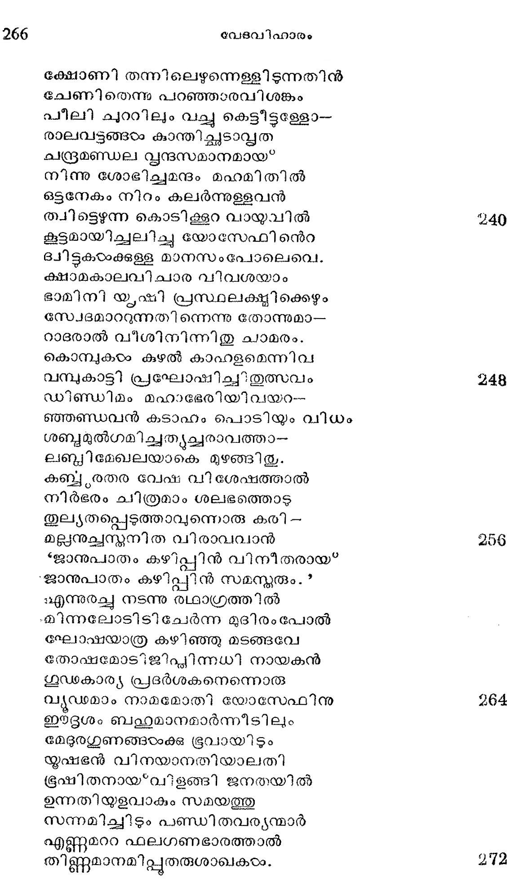
മുപ്പതു വയസ്സ്ാകവേ യൂഷഭന്
തല്ലടുതന്ക്കനുസ്രതയാതൊരു
കന്യകാകുലമാലയാ മാസിന--
ത്തെന്നപെണ്ണിനേ വേട്ട രാജാജബയാല്.
ഓന്നഗരപുരോഹി തന് തന്നുടെ
മാന്യപുത്രിയാമീയിവാം യൂസ്പനു
രണ്ടു മക്കളെപ്പെററാളൊരേ വസ്തു
രണ്ടു ദർപ്പണത്തിൽ തെളിയും വിധം. 280
നിര്ഭരമാം സദൂദ്ധി തന്കാലത്തി--
ലുത്ഭവിച്ചൊരീ മക്കളിലാദ്യനു
മാമകകഷ്ടമൊക്കെയും മല്പിതൃ
ഗേഹവും ഞാന് മാന്നുപോം രീതിയില്
ഈശമനെന്നേ നടത്തിയെന്നോതിയാ-
യൂഷഭന് മനശ്ലേതി പേരേകിനാന്.
ശുദ്ധനീശ്വരന് സങ്കടദേശത്തു
തൃദ്ധിയേകിയെനിക്കെന്നുരച്ച പിന് 288
എഫ്രയീം നാമമേകി രണ്ടാംനുത-
ന്നുടംപ്രിയത്തോടുകൂടി യൂസ്പാഭി ധന്.
മിസ്രയിമിലെ നുഭിക്ഷമുളള ഏഴു കാലങ്ങ6ം
ഭൂമിയില് മുന്പൊരിക്കലമുണ്ടായി--
ക്കേടംവിയില്ലാത്ത മട്ടിലും മര്ത്യന്െറ
ചിന്തയില്പെടാതുളള ചെഴിപ്പിലും
ചന്തമേറും സുഭിക്ഷമക്കാലത്തു
വന്നുദിച്ചിതു ചായ*വാനടുത്ത മ--
ദ്ധ്യാഹ്ന സൂര്യന്െറ രശ്മികഠം പോലവേ. 286
യൂഷഭന്നുടെ സ്വപ്യ വ്യാഖ്യാനത്തെ
ശോഷമാക്കിടാ തീജിപ്യയരേവരും
രാജശാസനമാര്ഗ്ലേണ വിശ്വസി--
ചാാജഗത്യാം കൃഷിപ്പണി യേററിനാര്.
ഏഴുവര്ഷ സദൃദ്ധിയെ കാംക്ഷിച്ചു
പാഴിടങ്ങളം മേടും മലകളം
മൺണ്വരിപ്പുകഠം കണ്ടം പറമ്പുകരം
മൺമയം മാത്രമുളള പാറപ്പുറം 8042
യാതൊരിയക്കുലം സീരച്ഛിദയറി-
യാതെയുള്ള മരുസ്ഥലം സൈകതം
കച്ഛഭ്ൂമ?കളെന്നിവ യൊക്കെയും
മെച്ചമായ* വിതച്ചീടിനാ രക്ഷണം.
വിത്തുവീണ നിലം സല്ഫലത്തിനാല്
വിത്ത ദേവത തന് കളി മേടയായ*
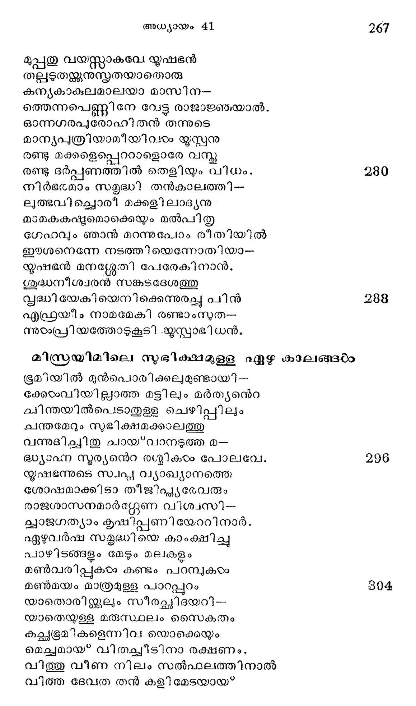
വിത്തമായിതെല്ലാടവും സ്വപ"നാത്ഥ--
വിത്തുമതൃന്ത മോദമിയന്നുതെ.
ഇസ്സമദ്ധിജുനുകൂലമായ* നിന്നു.
മത്സരം ലേശമെനേേ പ്രകൃതിയും
വര്ഷമാവശ്യം പോലെ കൊടുത്തിതു;
കര്ഷകന്മാര്ക്കു മേഘങ്ങടം സാദരം
സൂര്യനതൃത്തരശ്മി യൊതുക്കിത്തന്
വീര്യമല്മാത്രം വെളിവാക്കിനാന്
ചാഴികടം കിളിക്കൂട്ട മഴക്കാതെ--
യേഴുവേലിക്കകന്നു ചരിച്ചിതു.
മിക്കപോതും കൃഷിപ്പിഴയള്ളൊരീ
ഭിക്കിനിഗ്ശഗഡ ശുക്ര ദശയായി.
സ്വ്്റനാഥന് കനിഞ്ഞു നിന്നീടുമ്പോടം
വ്റ്റുഭേദമില്ലേതും സഹായമാം.
ഏവമെങ്ങും നിറഞ്ഞ ധാന്യങ്ങളാല്
ഹേമകഞ്ചുക൦ പൂണ്ടെജി പ്െങ്ങുമേ
ശോഭിക്കുമ്പൊഴുതി സ്രേല് സുതനവ
ശേഖരിപ്പാന് ചരിച്ചു നിരന്തരം.
ഗ്രാമമൊന്നില് വിളഞ്ഞ ധാന്യത്തെയാ-
ഗ്രാമത്തില്തന്നെ സംഭരിച്ചാത്മവാന്
രാജ്യമെങ്ങും നിറച്ചിതു ശസ്യക-
പ്രാജ്യശാലകളാല വിളംബിതംം.
വന്കടല്ക്കര തന്നിൽ കിടക്കുന്ന
തുംഗമാം സികതാഗണത്താല് പല
വന്മലക്ം ചമച്ചൊരു മട്ടിലി-
ധാന്യരാശി വളങ്ങിയാമിസ്രയിൽല്.
സവ്യഭാഗത്തു നിന്നു മത്ൃയല്ക്കട
ഗര്വ്വപുവ്വം മഹാധാന്യവാരിധി
ഉവ്വിയാകവേ കീഴടക്കീടുവാന്
ദു്യഹപ്രതാപാല് കയറും വിധ
കൃത്യമായി ത്തുടന്നോരളവിനി
സ്ലാദ്ധ്യമല്ലെന്നു കണ്ടു നിത്തീട്ടവ
ചേര്ത്തുവച്ചാന് കണക്കൊഴിഞ്ഞാലയ--
ച്വാര്ത്തിലാകവേ യൂഷഭന് യത്തഃ
ഭുര്ഭിക്ഷവത്സരങ്ങരം
കൊല്പമേഴിതു പോലെ മഹൈശ്വര്യ-
വലി പുത്തു ഫലങ്ങളതിര്ത്തപിന്
അല്ല നല്ല പകല് കഴിഞ്ഞെന്ന പോല്
മല്പനാം ക്ഷാമരാക്ഷസനെത്തിനാന്.
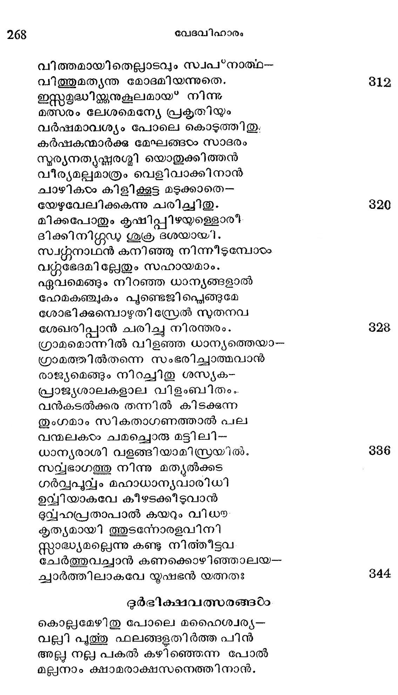
ഗോത്രയാകുമരങ്ങത്തൊരേഴാണ്ടു
നിന്ത്രപം നടിച്ചീടുവാന് വന്നൊരീ
നര്ത്തകന് കാട്ടമംഗവിക്ഷേപത്തിന്
വൃക്തചിഹനങ്ങഠം കാണുമാറായിതു.
സംഭരിച്ചു യഥേഷ്ടം വ്യയം ചെയ്ത
വന്പ കാട്ടിയിരുന്ന ധനാധിപര്
വേനലില് കുറഞ്ഞിടും ജലംപോലെ
മാനമെന്നിയെ ന്യൂനീ ഭവിച്ചിടും
ധാന്യരാശി കണ്ടുഠേക്കുരുന്നില് ബച്ചു
ടദൈനുൃമേന്തി പ്പിശുക്കു തുടങ്ങിനാര്.
കഷ്മിപിഷ്മഷിയായ* കാലത്തുമല്ില--
മഷ്മിയുണ്ടാം വിധത്തില് ചുരുക്കമായ"
അദൃൃയവസ്കുക്കരം നല്ക. മിടിയ്ര-
ലുദ്വമിക്കും ചരട്ടമാവെന്നപോല്.
മിക്കവാറും വിശന്നു തന്നെ ദിനം
പോക്കുമായതു ഭാവി സമഖ്യത്തിനു
തക്കമാറ്ററമെന്നോര്ത്തു സമാശ്വസി--
കുഠംക്കനം വിട്ടലഞ്ഞു നടന്നിടും.
ഭക്ഷ്യസാധനങ്ങരാക്കു പുത്വാധികം
രൂക്ഷമായ വിലയുയര്ന്നപ്പൊഴേ
ക്ഷാമദേവത തനെറ കരാളമാം
വായിലത്രേ വയമെന്നു ലോകര്ക്കു
തോന്നുവാന് കഴിഞ്ഞുള്ള; നുക്ഷ്മത്തിനേ
മാന്യമുള്ളോരറിഞ്ഞിട്ടം സ്ഥ ലത്താല്.
ക്ഷാമപാവകനു ജ്വലിചീടുവാന്
ഭീമവാതമെന്നോണം പ്രഭാകരന്
നീലപുഷ്കരമാകുമോരി ംഗാല-
ജാലമധ്യത്തെരികനല് പോലവേ
നിന്നു ഭൂതലം ചട്ട ദഹിപ്പതി-
ന്നുന്നത്രശ്രമം ചെയ്ത വിളങ്ങിനാന്.
തീ തുല്യം വെയിലെരിയുമ്പൊഴു--
താര്ക്കുമേ സഹിപ്പാന് കഴിയാതെയായ?
-ഇക്കുവാസികാഠം സംഭൂമിച്ചീടിനാര്
ചക്കനീറുംപടിക്കു നീറീടിനാര്.
കൂടുകൊണ്ടോടി വാപിതന് തീരത്തും
കാടുതന് നടുഭാഗത്തു മെത്തവേ
കൂട്ലര്പട പേടിച്ചു പന്തള-
ത്തോടിയ മട്ടിലായി ബ*ഭവിച്ചിതു.
വെള്ളമെല്ലാമനര്ന്നുഷ്ണതോയമായ*
കള്ളമല്ല കാടാകവേ വാടിപ്പോയ്.
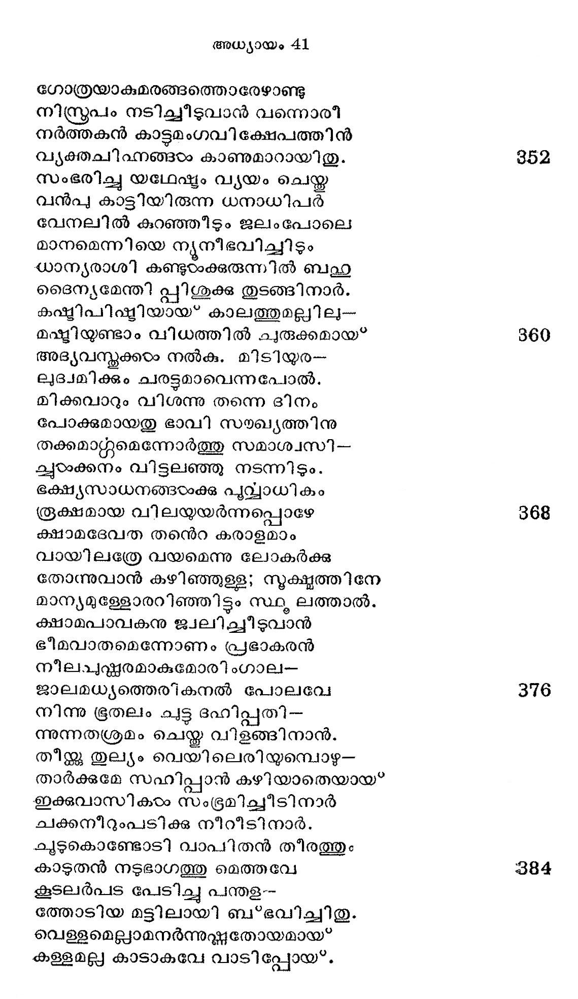
അല്ുിലും പകലിങ്കലെന്നോണമാ--
ണല്ലലുണ്ടായ തത്യന്ത ചുടിനാല്
ചാടി യോടിക്കളിച്ചു പുളല്ചൊരു
തോടുകടം നദി നീരൊഴക്കെന്നിവ
രാജയക്ഷ്ഠണാ ബാധിതനെന്നപ്പോല്
നൈജരാവം കുറഞ്ഞച്ചിലിട്ടൊരു
കമ്പിമട്ടിലശേഷം മെലിഞ്ഞിതാ
തുന്പമേറും വിധമിഴയുന്നഹോ!
നാട്ടിലുണ്ടാവാന് പോകും വിപത്തിനെ
സ്പപഷ്ടമായ്ക്കാണ്ക മൂലമോ സസ്യങ്ങഠം
നൂരഘോരകരാഗ്നിയില് സംപതി-
ചാരുയിര് കളഞ്ഞിടുന്നു തപ്ലരായ*.
പുഴിയാകെ യണങ്ങിത്തകര്ന്നിട്ട
ചൂഴവ്ം പൊടി പൊങ്ങിക്കൊടും പഞ്ഞ
ദേവത തന് കരിമ്പടം പോലവേ
യാ വിഹായസി വ്യാപിച്ചനൂുനമായ*
ചക്രവാതങ്ങടംം മൃത്തികാവ്യാജത്താ-
ലിക്കുവില്നിന്നു സംഭഭിക്ഷമാകവേ
ഉര്ദ്ധ്വലോകത്തിലാക്കവാനോ പര-
മുദ്ൃയമിചിളയ്്കില്യാതെ നിന്നുതേ.
മൂലവും ഫലജാലവും ഹാ! സമു--
ന്മൂലനം വന്നവേളയില് മാനുഷര്
കാലിവറ്റ്മൊടുക്കാന് തുടങ്ങിനാര്
കാല്യനൈശ വിലസ നിര്മ്മിത്യത്ഥംം,
അല്പവാസരം ചെന്നപോതുളെളാരു
കെല്ലശേഷം കുറഞ്ഞു കുന്നാലികം
മുള്ളകൊണ്ടൊരു പാര്ശ്വത്തു കുത്തിയാല്
തെല്ല താമസമെന്യേ മറുവശം
നല്ലപോല് കടന്നീടും വിധം മെലി -
ഞ്ഞല്ലലാണ്ടു കിടന്നു തൊഴുവത്തില്.
ചില്ലറ പ്രാണിവര്ഗ്ഗങ്ങളൊക്കെയും
വെള്ളമി ല്ലാഞ്ഞു മുഗ്രാതപത്താലും
പുളല്ലപോലെ തുലഞ്ഞുപോയ്* ഭക്ഷണ--
മില്പയെന്നായി മര്ത്ൃന്നു ഭൂമിയില്.
ഈദ്ദശം ക്ഷാമരാക്ഷസന് തന്ഗദ
മേദിനീവിസികരാംക്കു മേലോങ്ങദവേ
മണ്ടതുണ്ടായ* ഖണ്ഡിച്ച പോകായ*വാന്
രണ്ടുനാളിനു മുമ്പേതു മാര്ഗ്ഗുമോ,
ഉണ്ടിജിപ്പില് ധാന്യവാണിജ്യമെ-
ന്നിണ്ടലാററുന്ന സദ്വാര്ത്തയെങ്ങുമേ
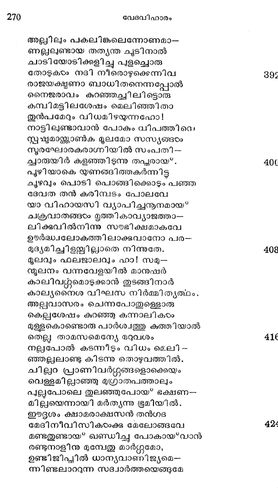
വന്നു നാട്ടില് നിരന്നതു മൂലമായ
മന്നിടം തന്നിലുള്ള മര്ത്യോല്ക്കരം
ചെന്നിജീിപ്പില് യക്ബജന്മുന് മധു--
ബിന്ദുവിന്മേലറുമ്പവകളെന്നപോല്. 32
മിസ്രയീമൃയരും വൈദേശികന്മാരും
മിശ്രമായൊരു വന്പിച്ച സംഹതി
നിതൃപവ്ൃത്താക്കു വേണ്ട ധാന്യം വില--
യുക്തമായ* കൊടുത്താശു വാങ്ങി സ്വക-
പത്തനം തന്നിലെത്തി സന്തൂഷ്ഷി യോ-
ടത്തലനേ്യേ വസിച്ചു ദിവാനിശം.
യൃഷഭന് തന് പ്രവചന മീവിധ-
മീഷല് ഭേഭമില്ലാതെ ഫലിച്ചിതു.
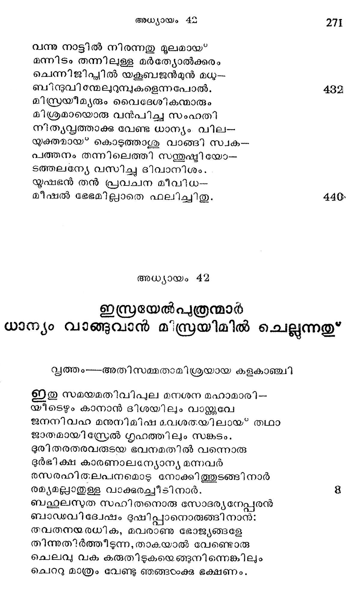